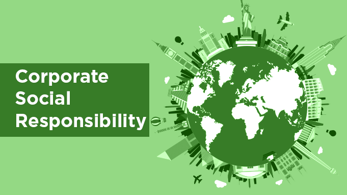

Overview
I prefer not to lead my biography with where and when I was born. That seems like secondary information. You are more likely to get to know me by learning what I believe.
To the extent that I can, I try to spend my time only doing things that fall under these two categories: learning/self-improvement and service/nurturing relationships.
I have goals to learn as much as I can from whomever I can. I also believe that an education has a lot less to do with hard skills like coding or writing and a lot more with understanding people.
As humans we all are on the same team and therefore we should "Listen as hard as we can to understand as much as we can to love as best as we can" (Reverand Teal). I try to understand other cultures and opinions.
Travel
The background picture may have revealed already my affinity for Paris. I spent 2 years in various parts of France and Belgium as a volunteer representative for my church. It was an eye-opening experience.
I speak French and am pursing a French Language Certificate at BYU.
Career Plans
I plan on applying to BYU's Strategy Managment program next year. I hope to do managment consulting at one of the large consulting firms.
My long term goal is to do corporate social responsibility. I hope to leverage business to do good.
Hobbies
I enjoy roller skating, snowboarding, playing volleyball, and dancing. I was heavily involved in music in high school (choir, theater, piano and guitar). Below is a video of me and my friend singing at graduation.
Contact
Contact me at the email address below. I'm especially interested in MLMs and doing summer sales.
fakeemailaddress@gmail.com
801-111-1111